Automotive SPICE: Defending SWE.1 to SWE.6
What each software process is for, what "compliant" really looks like, and how to explain your work to an assessor, illustrated on a surround view system.
0Overview
Automotive SPICE is written in a deliberately generic language so that it fits a body controller, a braking ECU and a camera system alike. That generality is exactly what makes it hard to apply: the model tells you what must be true about your work, never how to do it. This chapter translates the generic statements into the concrete artefacts, habits and arguments of a computer vision engineer working on an embedded automotive product.
Sections 1–3 build the mental model; sections 4–9 are a per-process reference.
Every process chapter follows the same pattern so you can find things quickly:
| Why it exists | The engineering problem the process solves — your answer to "this is just paperwork". |
|---|---|
| Surround view example | The practice on the vision SoC: pipeline, stitching, overlays, latency, image quality. |
| CDD / AUTOSAR example | The practice for a Complex Device Driver in a Classic AUTOSAR ECU. |
| What the assessor asks | Realistic assessor questions with answers that earn a good rating. |
| Typical findings | Weaknesses that repeatedly pull ratings down from F to L or P. |
| Evidence checklist | What you should be able to open in your tools within a minute. |
1How ASPICE works — and why OEMs insist on it
Before looking at individual processes, it pays to understand what an assessor is actually measuring. Most frustration with ASPICE comes from treating it as a document checklist. It is not: it is a structured way of asking "can this supplier deliver working software predictably, and can they prove it?"
1.1Why the automotive industry needs it
A modern vehicle contains software from dozens of suppliers. The OEM that integrates your surround view ECU cannot read your code, cannot sit in your sprint reviews and cannot re-test everything you deliver. What it can do is check whether the way you work makes good results likely. That is the core idea of a process capability model: a supplier whose requirements are clear, whose design is traceable to those requirements and whose tests demonstrably cover them will, on average, ship fewer surprises than a supplier who relies on heroic individuals.
Automotive SPICE (ASPICE) is the industry's shared yardstick for that check. It is maintained by the VDA Quality Management Center and built on the ISO/IEC 330xx assessment framework. Because most German and many international OEMs use it in supplier selection and in project milestones, an ASPICE rating has commercial weight: a poor result can mean a supplier is put under special monitoring, must deliver an improvement plan, or is not nominated for the next programme. Typical contractual targets are Capability Level 2 for all processes in scope, with Level 3 increasingly requested for new programmes.
Every base practice in the SWE processes exists because skipping it has, at some point, caused a recall, a launch delay or a field defect. When you explain your process, explain the risk it controls — not the clause it satisfies. "We trace every latency requirement to a HIL test because otherwise a regulatory rear-view requirement could silently remain untested" is a far stronger statement than "the standard requires traceability".
1.2Two dimensions: what you do and how well it is managed
ASPICE looks at your work along two independent dimensions. The process dimension lists the processes (SWE.1, SWE.2, SYS.2, SUP.8, …), each with a purpose, expected outcomes and base practices (BPs) — the engineering activities that achieve those outcomes. The capability dimension describes how mature the execution of any process is, from Level 0 to Level 5, using generic practices (GPs) that are the same for every process. Base practices answer "did you do the right engineering?"; generic practices answer "was it planned, monitored, controlled and reviewed?"
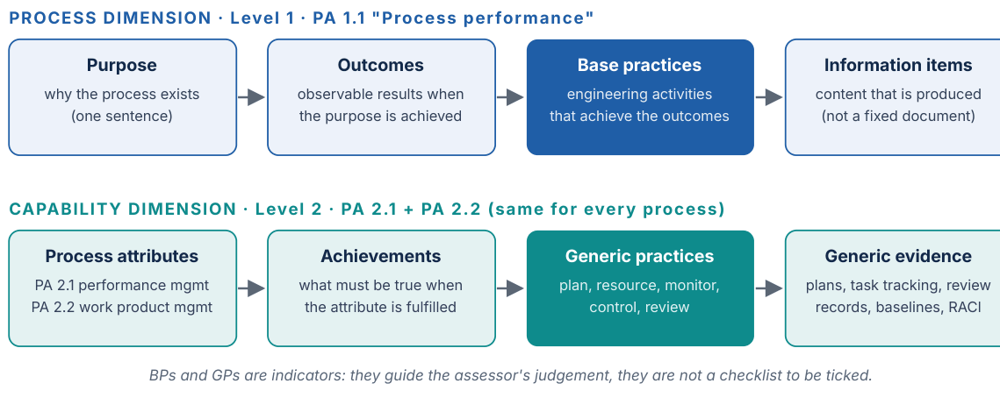
A detail that matters in interviews: since version 4.0, ASPICE talks about information items instead of "work products". The point is that the assessor looks for content, not for a document with a particular title. Your software requirements may live in Polarion or codebeamer, your architecture in Enterprise Architect, your unit tests in a Git repository and your review evidence in GitLab merge requests. That is perfectly fine as long as the content exists, is consistent and can be shown.
1.3Capability levels
Each process in scope receives its own capability level. A project can therefore be Level 2 in SWE.1 and Level 1 in SWE.5 — and the OEM will usually look at the weakest process. The levels are cumulative: to reach a level, all attributes of the lower levels must be fully achieved and the attributes of the level itself at least largely achieved.
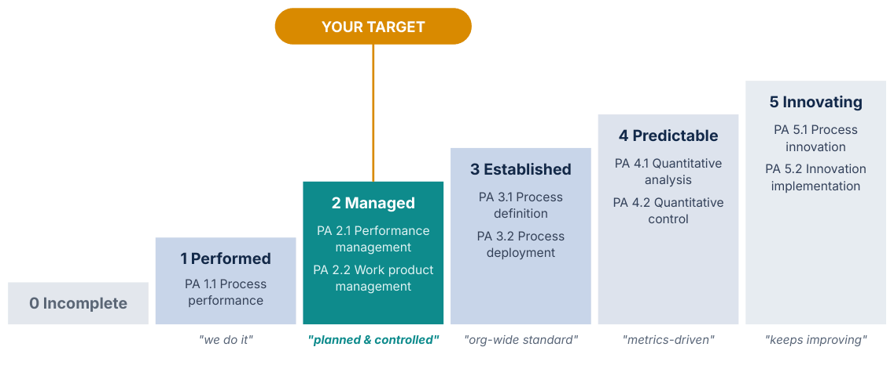
1.4The rating scale and the Level 2 rule
Every process attribute — and, as supporting indicators, every BP and GP — is rated on the four-point N-P-L- F scale based on how far it is achieved. Assessors may also use the refined steps P−/P+ and L−/L+ to express nuance. The percentages are a guide for judgement, not the result of counting documents.
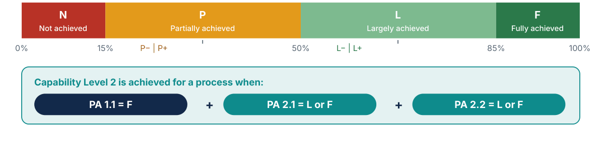
Teams often prepare intensively for the Level 2 generic practices — plans, review records, configuration management — and neglect the Level 1 engineering content. But because Level 2 requires PA 1.1 to be F, the engineering basics are the foundation. Inconsistent traceability, requirements without verification criteria or tests that do not match the requirements are the classic Level 2 killers.
1.5Level 1 versus Level 2 in one table
The difference is easiest to see on a concrete activity. Here it is for unit verification of the stitching module on the vision SoC:
| Question | Level 1 — "performed" | Level 2 — "managed" |
|---|---|---|
| Is it done? | Unit tests for the stitching LUT generator exist and run. | Same — plus it was planned: the unit verification tasks appear in the sprint/release plan with owners and dates. |
| Why this way? | The developer chose what to test. | A verification strategy defines objectives (e.g. branch coverage target, MISRA compliance, golden-image tolerance) and the team works towards them. |
| Resources? | Whoever had time wrote tests. | Needed people, skills, licences (e.g. static analyser) and CI runners were identified and made available. |
| Progress? | Unknown until the end. | Coverage and pass rate are tracked; when the target slipped, a corrective action was decided and recorded. |
| Outputs? | Test code is somewhere on a branch. | Test specification, test code and results are under configuration management, versioned and part of a baseline. |
| Quality? | Nobody checked the tests. | Tests were reviewed against defined criteria (e.g. traceable to design, checks boundary values), findings were closed. |
1.6How the rating is actually formed
An assessment is not an audit of documents alone. Assessors combine two kinds of evidence: objective evidence (tool records, documents, code, test reports, review records, Jira history) and affirmations (what people say in interviews). They look for these two to tell the same story. A beautiful process handbook that nobody in the interview can explain is rated weakly; a team that works well but cannot show any record of it is also rated weakly. Ratings are given per process instance — for your project, with your evidence — not for the company in general.
The assessment scope is agreed beforehand by the sponsor (often the OEM). In ASPICE 4.0 there is a small base of management and support processes that is normally always included, and "plug-in" groups such as system engineering, software engineering, hardware engineering or machine learning engineering are added as relevant. (The common former "VDA scope" corresponds to base + SYS + SWE; a perception product with neural networks may add MLE.)
The VDA Automotive SPICE Guidelines (the "blue-gold book") add interpretation rules and recommendations for assessors, for example how a weakness in one practice should influence the rating of related practices. You do not need to know these rules by heart, but you should know that they exist: they make ratings consistent across assessors, and they are why a single systematic gap (say, no bidirectional traceability) shows up in several places of your result.
The guide uses Automotive SPICE 4.0 (released November 2023) terminology, which most assessments now use. Some OEM programmes still assess against 3.1 — the process intent is the same, and chapter 13 contains a mapping of names and practice numbers so you can switch vocabulary on the day. Always ask your quality manager which PAM version and which process scope the assessment will use.
2The big picture
The six SWE processes are not six separate checklists. They are the two halves of a V: the left side decomposes "what" into "how", the right side proves each level of decomposition. Four habits run through all of them — and most assessment findings are violations of one of these habits.
2.1Where SWE sits in the V
System engineering (SYS) receives the customer's needs and turns them into system requirements and a system architecture that splits the product into hardware, software and — if neural networks are involved — machine-learning elements. Software engineering (SWE) starts where the system architecture allocates requirements to software. Each design level on the left has a matching verification level on the right, and each right-hand process proves the corresponding left-hand result.
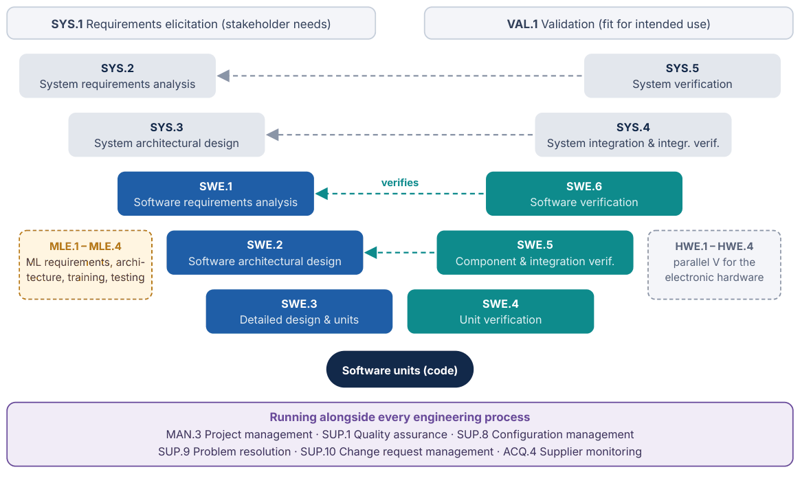
Two consequences of this picture are worth stating explicitly because assessors probe them:
- Each verification level has its own reference. A unit test that checks a software requirement is not wrong, but if all your tests are written against requirements, nobody has verified that the architecture's interfaces and timing behave as designed. Conversely, a strong unit test suite does not replace testing the requirements on the target.
- The V is a logical structure, not a waterfall schedule. Agile teams iterate through the V every sprint. ASPICE does not prescribe sequence; it asks that, at the moment of a release, each level is consistent and verified. "We work in Scrum" is never a reason for missing architecture or traceability.
2.2Four habits that run through every SWE process
If you remember nothing else, remember these. Almost every SWE process ends with the same two base practices — ensure consistency and establish bidirectional traceability, and communicate agreed results — and the verification processes add a third shared concept, the verification measure.
| Habit | What it means | Why it matters (risk it controls) |
|---|---|---|
| 1. Traceability | Explicit links between related items: system requirement ↔ software requirement ↔ architecture element ↔ detailed design ↔ unit ↔ verification measure ↔ result. Bidirectional means you can navigate in both directions. | Forward: is everything implemented and verified? (completeness). Backward: does everything have a reason? (no unrequested code). Both directions together make impact analysis of a change possible. |
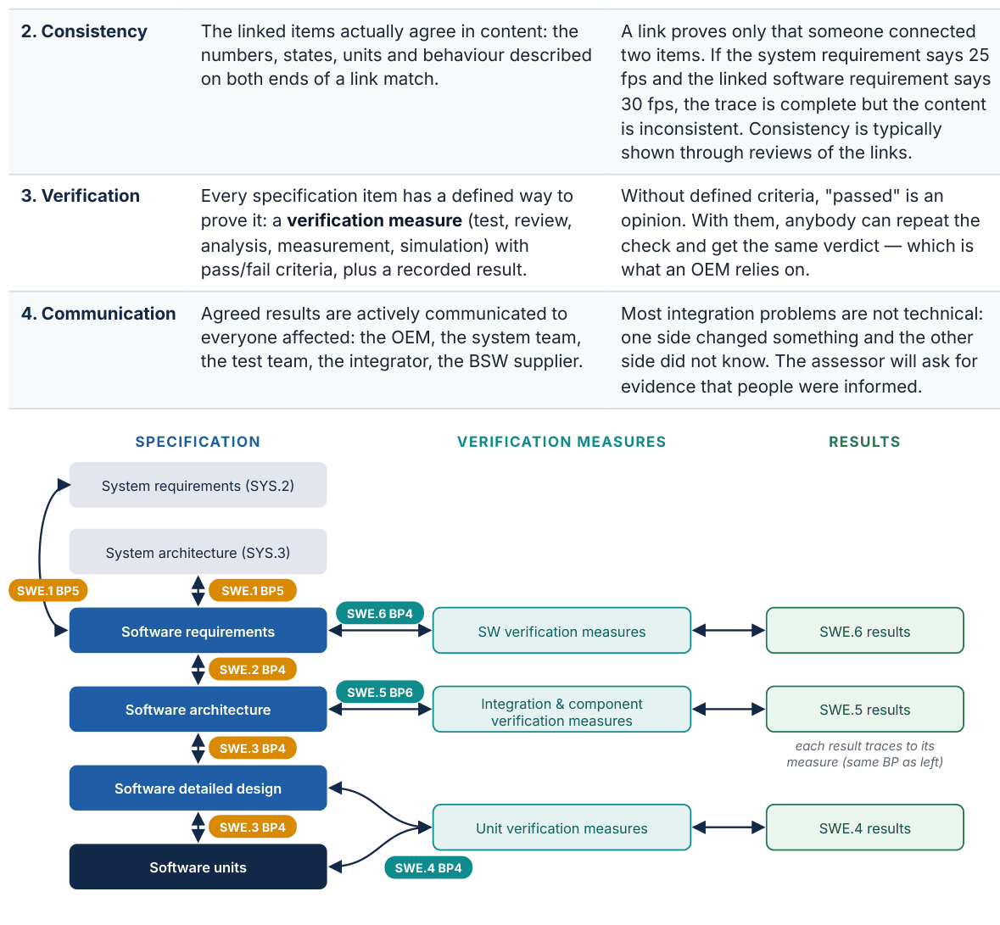
What "bidirectional" means in practice
Bidirectional traceability does not require you to store two links. It requires that your tool lets you start at either end and reach the other. A link from a test case to a requirement in Polarion is bidirectional, because Polarion shows the back-link automatically. A requirement ID written into a C comment is one-directional unless a script collects these IDs into a report; many teams do exactly that (for example, a CI job that parses @req SWRS-SVS-320 tags from unit tests and pushes a trace matrix into the requirements tool). Any of these mechanisms is acceptable — the assessor cares that the trace is complete, current and navigable.
Verification measures, not just "tests"
ASPICE 4.0 replaced the word test with verification measure. This matters to you as a vision engineer, because much of your verification is not a classic pass/fail test: a static analysis run, a code review against a checklist, a calibration accuracy measurement on a target rig, a back-to-back comparison with a Python reference model, or a timing analysis on the SoC trace are all valid verification measures. Each needs the same ingredients:
- what it verifies (trace to the item)
- the technique and the environment (host, SiL, HiL, target bench)
- preconditions / entry criteria and the stimulus or input data
- pass/fail criteria — numbers, tolerances, expected states
- which version of the software and of the measure was used
- the environment configuration (board revision, firmware, camera set)
- the verdict, with logs or measured values
- a link to a problem report for every failure
Strategy belongs to Level 2
In ASPICE 3.1 each verification process started with a base practice "develop a strategy". In 4.0 that idea moved into generic practice GP 2.1.1 (objectives and strategy for performing the process). For your Level 2 target that changes nothing in practice — you still need a verification strategy, an integration strategy and a regression approach — but it explains why an assessor will ask about your strategy while rating PA 2.1 rather than PA 1.1.
| SWE.1 | Turn the system requirements allocated to software into a set of clear, structured, analysed and verifiable software requirements. |
|---|---|
| SWE.2 | Decide how the software is split into components, how they interact, and what resources they may use — and justify those decisions. |
| SWE.3 | Design each component down to units precisely enough to implement them, then implement the units. |
| SWE.4 | Show that each unit does what its detailed design says, with code that meets your coding rules. |
| SWE.5 | Integrate units and components step by step, and show that the integrated pieces interact as the architecture says and each component behaves as specified. |
| SWE.6 | Show that the fully integrated software meets the software requirements, and provide the evidence needed for a release decision. |
3The running example: a surround view system
To make the generic practices concrete, all examples refer to one realistic product: a four-camera surround view ECU with a vision SoC for the image pipeline and a vehicle MCU running Classic AUTOSAR, where two Complex Device Drivers connect the AUTOSAR world to the camera hardware and to the SoC.
3.1The product: a surround view system (SVS)
Four fisheye cameras (front grille, rear tailgate, left and right mirrors, each roughly 190° field of view) stream raw images over serial links (GMSL or FPD-Link, with power-over-coax) to a quad deserializer on the ECU. The vision SoC runs the image pipeline: capture and ISP, lens distortion correction, projection of the four images onto a ground plane and a bowl surface, seam blending and photometric harmonisation, overlay rendering (static distance markers, dynamic trajectory lines that bend with the steering angle) and composition of the final layout sent to the head unit. A smaller vehicle MCU runs Classic AUTOSAR: it is the ECU's link to vehicle CAN (gear, speed, steering angle, view-button requests), it handles diagnostics (UDS over CAN/DoIP) and power modes, and it supervises the camera power supply.
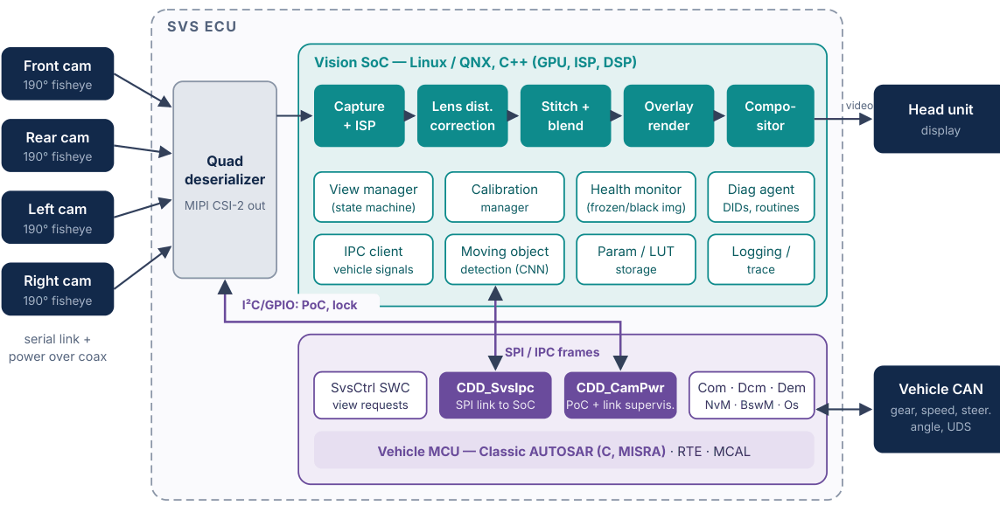
3.2Why Complex Device Drivers are involved
In Classic AUTOSAR, application software components talk to hardware only through the standardised basic software stack. When a function needs hardware access or timing behaviour that the standard modules do not provide, AUTOSAR allows a Complex Device Driver (CDD): a module that may access microcontroller peripherals directly, yet presents AUTOSAR interfaces — ports via the RTE and/or standardised BSW interfaces — to the rest of the ECU. Our ECU has two:
- CDD_SvsIpc implements a proprietary frame protocol over SPI between the MCU and the vision SoC: it forwards vehicle signals (gear, speed, steering angle, view requests) to the SoC with bounded latency and receives status and diagnostic information back (camera health, calibration status). Message timing, CRC/alive-counter handling and DMA buffer management are why it is a CDD.
- CDD_CamPwr switches the power-over-coax regulators, reads their current sensing, monitors the deserializer's link-lock status over I²C/GPIO and reports faults to the Diagnostic Event Manager (Dem), so that a broken camera cable results in a DTC.
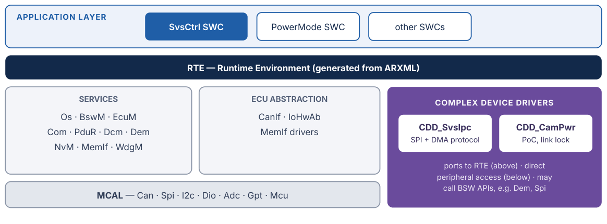
3.3The running example requirements
The following system-level requirements recur throughout the chapter. Their wording is simplified, but each is typical of a real SVS specification:
| ID | System requirement (simplified) | Software involved |
|---|---|---|
| SYS-SVS-101 | When reverse gear is selected, the rear camera image with static guidelines shall be displayed within 2.0 s (regulatory rear-visibility requirement). | SvsCtrl SWC, CDD_SvsIpc, view manager, pipeline, compositor |
| SYS-SVS-140 | The system shall display a top (bird's-eye) view composed from all four cameras with seam misalignment ≤ 5 cm on flat ground within 3 m. | LDC, stitching, calibration manager |
| SYS-SVS-160 | Dynamic trajectory lines shall follow the current steering angle with a delay ≤ 150 ms. | CDD_SvsIpc, IPC client, overlay renderer |
| SYS-SVS-180 | Loss of a camera image shall be detected within 500 ms, indicated to the driver and stored as a DTC. | CDD_CamPwr, health monitor, Dem, HMI overlay |
| SYS-SVS-190 | Extrinsic calibration shall be executable at end of line via a diagnostic routine and stored persistently. | Dcm routine, diag agent, calibration manager, NvM |
The moving-object-detection block (a CNN that warns about pedestrians close to the vehicle) is a machine learning element. In ASPICE 4.0 its requirements, architecture, training and testing are covered by the MLE processes and its data by SUP.11, while the code that hosts and runs the network (pre-/post-processing, inference runtime integration) remains ordinary software under SWE. Chapter 11 explains the interface. Whether MLE is in scope is decided when the assessment scope is agreed.
4SWE.1 Software Requirements Analysis
SWE.1 is where the software team takes ownership. The system team hands over requirements allocated to software; SWE.1 turns them into a set of software requirements that are precise enough to design against and to test against — and it is the anchor for every trace that follows.
Establish a structured, analysed and agreed set of software requirements that are consistent with the system requirements and architecture.
System requirements and system architecture (allocation to SW), interface definitions (ECU extract ARXML, DBC, IPC spec), OEM component specification, diagnostic specification, standards and regulations.
Software requirements with attributes (incl. verification criteria), analysis results, traceability and consistency evidence, communication evidence.
System requirements describe the behaviour of the whole ECU or vehicle function. They are rarely precise enough for software: "rear image within 2 s" says nothing about which software element must react to which signal, how fast, and what happens if the signal is invalid. If the software team does not refine and analyse them, the refinement still happens — silently, in someone's head or in code — and nobody can test, review or change it deliberately. SWE.1 makes that refinement explicit, so it can be agreed with the OEM, designed, verified and impact-analysed later.
4.1What has to be done — the base practices
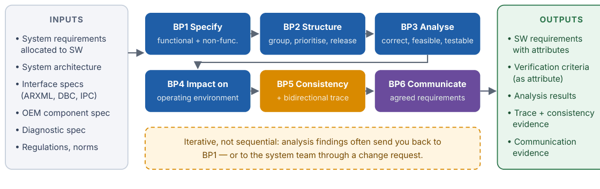
| BP1 | Specify software requirements Derive the requirements for the software from the system requirements and system architecture allocated to it, plus anything else that constrains the software: interfaces, diagnostics, start-up behaviour, timing, resource limits, safety and security mechanisms. Each requirement gets defined characteristics — in 4.0 the verification criteria are one of these characteristics, so a requirement without a way to verify it is incomplete. |
|---|---|
| BP2 | Structure software requirements Organise them so people can work with them: by feature or software element, with priority and assignment to releases or variants (for example a "rear camera only" variant versus the four-camera variant). Structure is what lets a test team plan by release and an architect see what a component must do. |
| BP3 | Analyse software requirements Check them for correctness, technical feasibility and verifiability, and understand dependencies between them. The analysis must leave a trace — review comments, a feasibility note, a prototype measurement — so you can show that and how it was done. |
| BP4 | Analyse the impact on the operating environment Determine how the software affects the elements around it: CPU and GPU load, memory and DDR bandwidth, bus load on CAN, start-up time, power and thermal budget, other software sharing the same SoC. |
| BP5 | Ensure consistency and establish bidirectional traceability Link every software requirement to the system requirements and the system architecture it comes from, and make sure the linked contents agree. Requirements that have no parent must be justified (for example derived from a design constraint) — not simply left orphaned. |
| BP6 | Communicate agreed software requirements and impact Make sure everyone affected knows the agreed requirements and the impact analysis: architects, developers, testers, the system team and — where the contract requires — the OEM. "Agreed" implies there was a review and an explicit approval step. |
4.2Surround view example: from system to software requirement
Take SYS-SVS-101: rear camera image within 2.0 s of selecting reverse. This is one sentence at system level, but at least four software elements on two processors must cooperate to fulfil it. Refining it is SWE.1 work:
SWRS-SVS-0450
The SVS software shall show the rear camera
image fast when reverse gear is engaged, in
good quality.SWRS-SVS-0451
The view manager shall switch the display
layout to "Rear + Top" within 100 ms after
receiving GearPosition = REVERSE with valid
status from the IPC client.
Verification criteria: SW verification on
target bench; stimulus via CAN; measured from
IPC frame timestamp to compositor layout-
change log; 200 repetitions; max ≤ 100 ms.Unverifiable ("fast", "good quality"), no trigger condition, no owner element, no behaviour for invalid signals. A tester would have to invent the pass criterion — which means the requirement is effectively written during testing.
A realistic decomposition of SYS-SVS-101 yields a small family of software requirements, each with its own owner element, time budget and verification criteria:
| SW requirement | Content (abbreviated) | Element | Budget |
|---|---|---|---|
| SWRS-MCU-0210 | Forward GearPosition from RTE to SoC via IPC frame | CDD_SvsIpc | ≤ 20 ms |
| SWRS-SVS-0440 | Rear camera pipeline produces first valid frame after cold start (early-boot path) | Capture/ISP, fast-boot service | ≤ 1.4 s |
| SWRS-SVS-0451 | Switch layout to "Rear + Top" after valid REVERSE | View manager | ≤ 100 ms |
| SWRS-SVS-0452 | If GearPosition is invalid or IPC times out, keep current view and show "camera view unavailable" banner | View manager, overlay | — |
| SWRS-SVS-0320 | Camera-to-display latency of rendered output, P99 | Pipeline end-to-end | ≤ 120 ms |
Notice the budgets: they add up to less than 2.0 s with margin. Checking that they do add up — and that the cold-start case is feasible at all — is the analysis that BP3 asks for.
During analysis the team measured the SoC's Linux cold boot on the B-sample: 2.4 s until the display pipeline is up. SYS-SVS-101 is therefore not feasible with a normal boot. The analysis result (a short feasibility note with the measurement and boot chart) led to two outcomes: a derived requirement for an early rear-view path that starts in a minimal RTOS partition before Linux is up, and a change request to the system team asking how the 2.0 s should be measured (from CAN signal reception, or from the driver's gear lever?). This is exactly the kind of evidence an assessor hopes to see: analysis documented, consequence decided, system side informed.
BP4 in the same project: enabling the 3D bowl view increased GPU load from 55 % to 78 % and DDR bandwidth by 1.1 GB/s. Because the head unit's cluster rendering shares the same SoC on another programme variant, the impact was recorded and communicated to the platform team, who set a GPU budget of 70 % — which then became a software requirement on the SVS.
The CDD's requirements come from several sources: the system architecture (MCU forwards vehicle signals to the SoC), the inter-processor interface specification, the ECU extract ARXML (signal names, data types, update rates), and the diagnostic specification. Typical well-formed software requirements:
- SWRS-MCU-0210 CDD_SvsIpc shall transmit the latest GearPosition, VehicleSpeed and SteeringWheelAngle to the SoC in an IPC frame at least every 10 ms, and within 20 ms after a change of GearPosition is received via the RTE.
- SWRS-MCU-0214 Each IPC frame shall carry a CRC and an alive counter; the receiver shall discard frames with CRC error or repeated counter.
- SWRS-MCU-0220 If no valid response frame is received from the SoC for 100 ms, CDD_SvsIpc shall report the Dem event
SVS_IPC_COMM_TIMEOUTas FAILED and set the RTE status port toIPC_LOST. - SWRS-MCU-0230 (non-functional) The CDD's cyclic main function shall not exceed 60 µs execution time per call in the 5 ms OS task (budget from the MCU timing architecture).
Good practice: do not copy every signal attribute from the ARXML into the requirements tool. Reference the communication matrix version instead ("signals as defined in ECU extract v3.2") and trace to it. Copies go stale; references stay consistent.
The anatomy of a requirement an assessor likes
| Attribute | Example for SWRS-SVS-0451 |
|---|---|
| ID / version | SWRS-SVS-0451, rev. 3 (stable, never reused) |
| Text | One testable statement: trigger, actor, response, constraint |
| Type | Functional / timing / resource / interface / diagnostic / safety / security |
| Rationale | Derived from SYS-SVS-101 budget split (feasibility note FN-012) |
| Status | Draft → in review → agreed → (rejected / obsolete). Only "agreed" requirements are baselined. |
| Release / variant | R2.0; all variants |
| Safety / security class | QM (or ASIL / cybersecurity relevance if applicable) |
| Verification criteria | Method, level (SWE.6), environment, acceptance criteria with numbers |
| Links | Parent SYS-SVS-101, allocated element "View manager" in system architecture |
4.3What the assessor asks
The assessor's typical questions for SWE.1, with answers that work, are collected in Q.1 at the end of the chapter, so you can rehearse them in one place.
- Copy-paste requirements: software requirements are identical to system requirements, so no refinement or analysis is visible (BP1, BP3 weak).
- Missing non-functional requirements: timing, start-up, resource and robustness behaviour exist only in the architects' heads.
- Verification criteria are empty or say "test passed".
- Trace only to system requirements, not to the system architecture, or trace links exist but were never reviewed for consistency.
- Analysis happened in meetings but left no record — the assessor cannot rate what cannot be shown.
- No evidence of agreement or communication: statuses never move beyond "draft", nobody outside the team was informed of changes.
- Software requirements module/document with IDs, attributes, statuses and verification criteria
- Trace view: SW requirement ↔ system requirement and ↔ system architecture element; coverage report without unjustified gaps
- Analysis records: feasibility notes, prototype measurements, review comments, resource/impact analysis
- Review records for the requirement baseline (participants, criteria, findings, closure)
- Communication evidence: baseline notification, OEM agreement, release notes, meeting minutes
5SWE.2 Software Architectural Design
The architecture is where the hard, non-functional requirements of a vision system are actually won or lost: latency, frame-rate stability, memory bandwidth, start-up time, degradation behaviour. SWE.2 asks you to make these decisions explicitly, describe them so that others can build and test against them, and explain why you chose them.
Define the software elements, their interfaces and their interaction over time, allocate the software requirements to them, and justify the design against the requirements and resource limits.
Software requirements, system architecture (HW resources, processors, partitioning), platform constraints (AUTOSAR stack, OS, SoC SDK), third-party components.
Software architecture with static and dynamic views, interface descriptions, resource budgets, design decisions with rationale, traces, communication evidence.
Several teams — sometimes several companies — implement the parts of an SVS: your vision team, the BSW integrator, a SoC vendor providing the ISP driver, an HMI supplier. They can only work in parallel if the boundaries between their parts are defined as contracts. The architecture is also the reference for integration verification (SWE.5): if you never wrote down how components are supposed to interact, integration testing can only check "it seems to work". Finally, resource problems are architecture problems: if the GPU is 95 % loaded at SOP, no amount of unit testing will fix it.
5.1What has to be done — the base practices
| BP1 | Specify the static aspects of the software architecture Decompose the software into elements (components), define their interfaces (data, types, ranges, units, rates, ownership of buffers), and allocate software requirements to the elements. Include everything that runs: your own components, AUTOSAR BSW, OS, middleware, third-party libraries and generated code. |
|---|---|
| BP2 | Specify the dynamic aspects Describe behaviour over time: operating modes and states, start-up and shutdown, sequences of interaction for the key use cases, task/thread model and scheduling, timing chains, synchronisation, and error/degraded behaviour. |
| BP3 | Analyse the software architecture Evaluate the design against the requirements and constraints: define and check resource consumption objectives (CPU, GPU, RAM, DDR bandwidth, flash, start-up time), assess alternatives and technical risks, and document the rationale for important design decisions. |
| BP4 | Ensure consistency and establish bidirectional traceability Between software requirements and the architectural elements they are allocated to. Every requirement lands somewhere; every element is justified by requirements. |
| BP5 | Communicate the agreed software architecture To the developers of each component, the integrators, the testers, and external parties who own interfaces (SoC vendor, BSW supplier, OEM for external interfaces). |
5.2Surround view example: the static view
An architecture view is useful when another engineer can answer "who produces this data, in which format, at what rate, and who frees the buffer?" by looking at it. A box diagram without interface definitions does not achieve that.
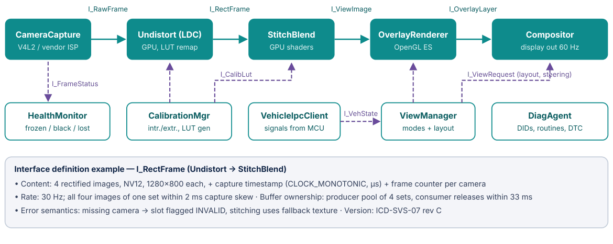
5.3Surround view example: the dynamic view
The single most valuable dynamic view for an SVS is the "reverse gear" sequence, because it crosses both processors, the vehicle bus and the regulatory 2-second requirement. Drawing it forces the team to agree on where the time goes.
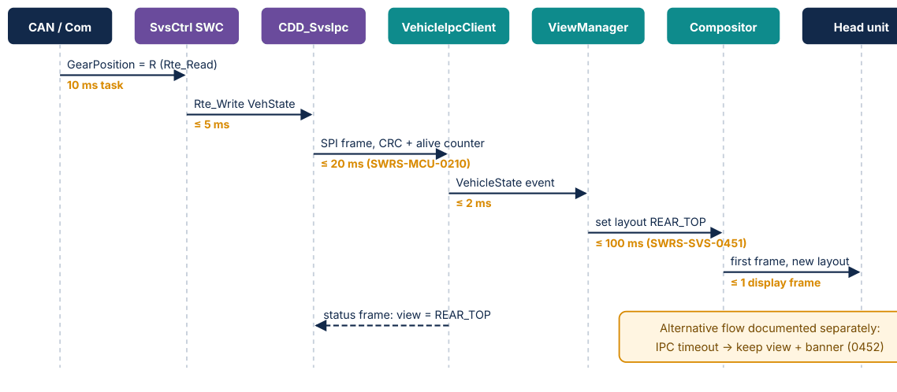
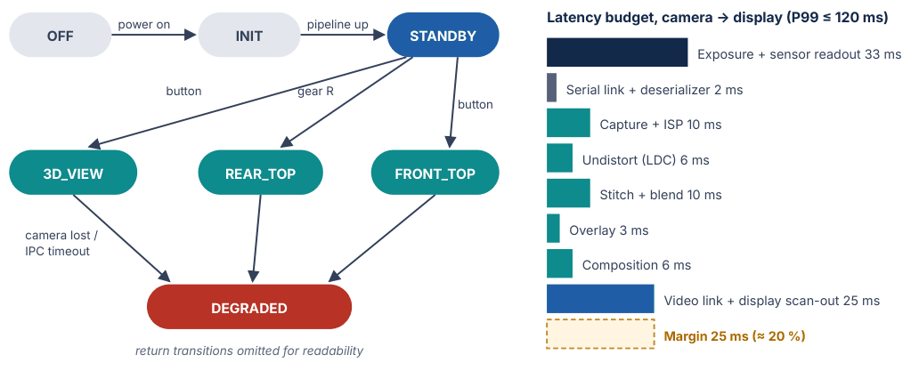
Design decisions and their rationale (BP3)
Assessors do not judge whether your decisions are technically optimal. They check that important decisions were made consciously, with alternatives and criteria, and that the rationale is recorded where the next engineer will find it. A lightweight Architecture Decision Record (ADR) is ideal:
| ADR-SVS-004 | Stitching implementation: precomputed remap LUT on GPU |
|---|---|
| Context | Top view must render 30 fps at ≤ 10 ms per frame (budget, Fig. 5.4); calibration may change at end of line and after workshop recalibration. |
| Alternatives | (a) per-pixel projection in shader; (b) precomputed LUT on GPU, regenerated on calibration change; (c) vendor hardware warp engine. |
| Evaluation | Prototype measurements on B-sample: (a) 14.2 ms, (b) 6.8 ms, (c) 4.1 ms but limited to 2 inputs per pass and no blending. |
| Decision | (b). LUT regeneration (≈ 300 ms) runs in CalibrationMgr outside the frame loop; LUT stored persistently, checksum verified at start-up. |
| Consequences | + 48 MB DDR for LUTs; new requirement on LUT integrity check; architecture interface I_CalibLut added. |
For a Classic AUTOSAR ECU, parts of the static architecture are formally described in ARXML: the CDD's software component type, its ports and port interfaces, runnables and RTE events. That ARXML is real architecture content and should be referenced — but it is not sufficient on its own, because it carries neither rationale, nor dynamic behaviour beyond event triggers, nor resource budgets. A complete architecture description of the CDD covers:
- Static: R-port
VehState_In(from SvsCtrl), P-portSvsStatus_Out; internal elements FrameCodec, LinkScheduler, SpiTransport, Supervision; used BSW services: Spi (asynchronous job/sequence), Dem (event reporting), Det; memory sections per MemMap (DMA buffers in non-cached RAM). - Dynamic:
CddSvsIpc_MainFunctionmapped to the 5 ms OS task; DMA-complete notification from Spi; state machine INIT → SYNCING → RUNNING → LOST; behaviour on SoC reset (re-sync within 3 frames, no Dem event during expected SoC restart window). - Resources: CPU ≤ 1.5 % of core 0, RAM 2.5 KB, stack 320 B, worst-case main-function runtime 60 µs — objectives that SWE.5 later measures with a timing tool.
- Decision: "use AUTOSAR Spi driver in asynchronous mode instead of direct register access" — rationale: keeps the MCAL as the only peripheral owner, eases MCAL updates; cost: ≈ 40 µs extra latency, acceptable against the 20 ms budget.
5.4What the assessor asks
The assessor's typical questions for SWE.2, with answers that work, are collected in Q.2 at the end of the chapter, so you can rehearse them in one place.
- Architecture is a single block diagram — no interfaces, no dynamic view.
- No resource consumption objectives, or objectives that are never checked.
- Design decisions undocumented ("we discussed it in a workshop"), or the architecture is outdated against the code.
- For AUTOSAR ECUs: the ARXML is presented as "the architecture", with no description of CDD behaviour, timing or rationale.
- Requirements allocated only to "SVS software" as a whole instead of to elements, so traceability is formally present but useless.
- Static view with elements and interface definitions (incl. third-party, BSW); dynamic views: modes, key sequences, task model
- Resource budgets (CPU/GPU, memory, bandwidth, latency, start-up) and the analysis behind them
- Design decision records with alternatives and rationale; trace SW requirements ↔ architecture elements
- Architecture review record; evidence that interface owners (SoC vendor, BSW integrator, HMI) agreed the interfaces
6SWE.3 Software Detailed Design and Unit Construction
SWE.3 zooms from components into units and then into code. For a vision engineer this is where the mathematics lives: the projection model, the interpolation, the numeric precision, the memory layout. A good detailed design lets a colleague implement or review a unit without reverse-engineering your intent from the code.
Provide a detailed design for each software component that specifies its units, and produce the units according to that design.
Software architecture (component boundaries, interfaces, budgets), software requirements allocated to the component, coding guidelines, platform constraints.
Detailed design (static + dynamic), software units (source code), traces design ↔ architecture and units ↔ design, communication evidence.
Code tells you what the software does, not what it is supposed to do. Without a design you cannot decide whether a behaviour is a bug or a feature, you cannot write unit tests that are independent of the implementation (otherwise tests just mirror the code), and a reviewer cannot check numerical decisions such as "why is the LUT stored as Q12.4 fixed-point?". The detailed design is also the reference for SWE.4: unit verification checks units against it.
6.1What has to be done — the base practices
| BP1 | Specify the static aspects of the detailed design For each component: its units, their interfaces (functions, parameters, types, ranges, units of measure), data structures and memory layout, algorithms, configuration parameters and error handling. |
|---|---|
| BP2 | Specify the dynamic aspects of the detailed design Behaviour within the component: state machines, call sequences, timing, re-entrancy and concurrency rules, which unit runs in which thread or task, interrupt handling. |
| BP3 | Develop software units Implement the units according to the detailed design and the agreed coding guidelines (for example MISRA C:2012 on the MCU, AUTOSAR C++14 / MISRA C++:2023 or an internal C++ guideline on the SoC). |
| BP4 | Ensure consistency and establish bidirectional traceability Between the detailed design and the architecture (which component/interface does this design belong to?) and between units and the detailed design (which unit implements which design element?). |
| BP5 | Communicate the agreed detailed design and developed units To the people who verify, integrate and maintain them — typically via the reviewed design in the repository and the merged code with a release note. |
First decide: what is a "unit" in your project?
ASPICE leaves the definition of a software unit to you, but you must define it and apply it consistently, because SWE.4 coverage and traceability are counted per unit. Common definitions are "one C module (.c/.h pair)" on the MCU and "one C++ class or a small cohesive group of free functions in one namespace" on the SoC. Write the definition into your software development plan or verification strategy — assessors regularly ask, and an inconsistent answer between two interviewees is a finding.
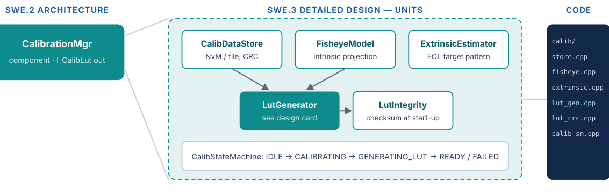
6.2Surround view example: a design card for a vision unit
The detailed design of an algorithmic unit should record the decisions a reviewer needs to judge correctness. Here is a compact but complete example for the LUT generator. Note that it describes intent and constraints — it does not paraphrase the code line by line.
| LutGenerator | Detailed design (DD-CAL-LUT, rev. 4, component CalibrationMgr) |
|---|---|
| Responsibility | Generate, per camera, a remap LUT from output (top-view / bowl) pixel to source fisheye pixel coordinates. |
| Interface | Status generate(const Intrinsics&, const Extrinsics&, const ViewGeometry&, LutBuffer& out); returns OK / INVALID_PARAM / OUT_OF_MEMORY; out is pre-allocated by the caller (no heap use in the unit). |
| Algorithm | For each output pixel: ground-plane or bowl point → camera frame via extrinsics → ray angle θ → distorted radius with Kannala–Brandt polynomial (k1..k4) → pixel via principal point and focal length. Points behind the camera or outside the image circle are marked INVALID (0xFFFF). |
| Data / precision | LUT coordinates in unsigned fixed point Q12.4 (≤ 4095.94 px, resolution 1/16 px). Reference implementation in double precision; required max deviation ≤ 0.05 px over the valid area. |
| Dynamic behaviour | Called only by CalibStateMachine in state GENERATING_LUT, in the low-priority calibration thread; not re-entrant; must not run concurrently with the frame loop reading the same buffer (double-buffering, swap on READY). |
| Resources | ≤ 300 ms per camera on one A-core; 12 MB per camera LUT; no dynamic allocation. |
| Error handling | Invalid intrinsics (e.g. focal length ≤ 0, non-monotonic distortion) → INVALID_PARAM, previous LUT kept, error reported to CalibStateMachine. |
| Traces | Up: architecture element CalibrationMgr, interface I_CalibLut. Down: calib/lut_gen.cpp/.hpp. Verified by: UVM-CAL-LUT-01…09 (SWE.4). |
Because the design states "max deviation ≤ 0.05 px against a double-precision reference", SWE.4 has an objective pass criterion: generate the LUT for a set of synthetic calibrations and compare it with a Python/NumPy reference. Without that statement, the unit test would compare the code to its own earlier output (a "golden file" nobody understands) — which proves only that nothing changed, not that anything is right.
On the MCU the detailed design typically lives in a design document or model per CDD, plus the module's configuration description. For the supervision unit of CDD_SvsIpc the dynamic design is a state machine with exact counters, because these numbers are what the unit tests will check:
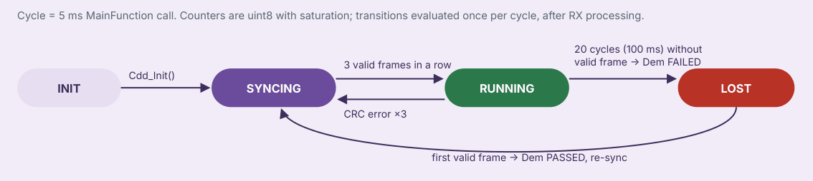
CDD_SvsIpc: INIT, SYNCING, RUNNING and LOST, evaluated once per 5 ms cycle.The static part of the same design lists each API (CddSvsIpc_Init, CddSvsIpc_MainFunction, the Spi end-of-job notification), the module's global data with their MemMap sections (DMA buffers in a non-cacheable section), the configuration parameters (frame period, timeout cycles) and the Dem events used. On the unit construction side, the evidence is the MISRA-compliant C code plus a deviation record for every justified rule violation — for example a cast needed for the DMA register address.
Practical points that often come up
- Generated code. For RTE and BSW generated by the AUTOSAR toolchain, the configuration is your design artefact and must be under configuration management and reviewed; you do not write a detailed design for generated C files. For model-based units (Simulink, TargetLink), the model is the detailed design.
- Third-party and open-source code (vendor ISP SDK, OpenCV parts, inference runtime) is not designed by you, but it must appear in the architecture with version and intended use, and its qualification belongs to SWE.5/SUP processes or supplier agreements.
- Docs-as-code is fine. A Markdown or reStructuredText design page next to the code, reviewed in the same merge request, often stays more consistent than a separate Word document. Assessors accept any form that is structured, versioned, reviewed and traceable.
- Doxygen alone is usually not enough. An API listing generated from headers lacks algorithms, dynamic behaviour and rationale. Doxygen enriched with design sections, state diagrams (PlantUML) and constraints can be.
6.3What the assessor asks
The assessor's typical questions for SWE.3, with answers that work, are collected in Q.3 at the end of the chapter, so you can rehearse them in one place.
- Detailed design is a header-file dump without algorithms, ranges, error handling or dynamics.
- Design was written after the code, shortly before the assessment (version history shows it) — consistency is then usually poor.
- No definition of "unit", or different definitions in different teams.
- No traceability between design and architecture: a design document exists, but nobody can say which architecture component it details.
- Coding guideline defined but not applied, or deviations accepted without justification.
- Definition of software unit; detailed design per component (static + dynamic), versioned and reviewed
- Source code under configuration management, following the named coding guideline; deviation records
- Trace: design ↔ architecture element; unit (file/class) ↔ design element
- Review evidence for design and code changes (merge requests with checklists)
7SWE.4 Software Unit Verification
SWE.4 proves that each unit does what its detailed design says and that the code meets your coding rules. It is the cheapest place to find defects — and, because it is highly automated, it is also the place where teams most easily produce a lot of data without being able to show what it proves.
Verify that software units are consistent with the detailed design, using defined verification measures, and record and communicate the results.
Detailed design, software units, coding guidelines, verification strategy (Level 2), problem reports.
Unit verification measures (static analysis set-up, review checklists, unit test specifications), selection for each release, results, traces, summary report.
A defect found in a unit test costs minutes; the same defect found on the HIL bench costs hours of debugging across two processors, and found by the OEM it costs a ticket, a re-delivery and trust. More importantly, many behaviours of a vision unit — numeric precision, corner cases like points behind the camera, invalid calibration parameters — are almost impossible to provoke on the integrated system. They can only be verified systematically at unit level.
7.1What has to be done — the base practices
| BP1 | Specify software unit verification measures Define how each unit is verified: which techniques (static analysis, code review, unit test, coverage measurement, back-to-back testing…), with which pass/fail criteria, entry and exit criteria, and in which environment (host, target, simulator). Unit tests are derived from the detailed design, not from the code. |
|---|---|
| BP2 | Select software unit verification measures Choose which measures are executed for a given release or change, including regression. "All unit tests on every merge request, target runs nightly, full set plus coverage for each release" is a selection rule. |
| BP3 | Verify software units Execute the selected measures and record the results with enough context to reproduce them: software version, tool versions, environment, logs. |
| BP4 | Ensure consistency and establish bidirectional traceability Between verification measures and the units/detailed design they verify, and between results and measures. |
| BP5 | Summarise and communicate results Provide a summary (pass/fail, coverage, open findings, linked problem reports) to those who need it: project lead, integrator, quality assurance. |
7.2The unit verification toolbox
Unit verification is more than unit tests. ASPICE 4.0 explicitly accepts different verification measures; what it requires is that each one is defined, has criteria and produces recorded results.
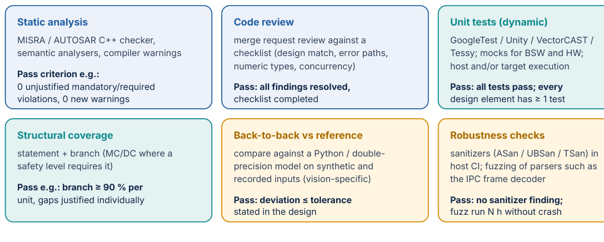
7.3Surround view example: verifying the LUT generator
The design card in chapter 6 makes the test specification almost write itself. Each test case traces to a design statement and states its own criterion:
| ID | Verification measure | Pass criterion |
|---|---|---|
| UVM-CAL-LUT-01 | Back-to-back against NumPy reference for 12 synthetic calibrations (nominal, ±3° extrinsic, extreme distortion) | max |Δ| ≤ 0.05 px over valid area |
| UVM-CAL-LUT-03 | Ground points behind the camera plane and outside the image circle | entries = 0xFFFF (INVALID) |
| UVM-CAL-LUT-05 | Invalid intrinsics: focal length 0, non-monotonic distortion polynomial | returns INVALID_PARAM; output buffer unchanged |
| UVM-CAL-LUT-07 | Q12.4 conversion at range limits (0, 4095.9375, overflow) | saturates, no wrap-around |
| UVM-CAL-LUT-09 | Static analysis + code review of lut_gen.cpp | 0 unjustified violations; review checklist complete |
Vision units raise two questions assessors increasingly ask. First: host versus target. Floating-point results on an x86 CI runner and on the SoC's ARM cores or GPU are not bit-identical. The strategy must say which tests run where and why tolerance-based comparison is valid — for instance "functional unit tests on host with tolerance 0.05 px, plus a nightly target run of the back-to-back suite to catch compiler and FPU differences". Second: golden images. A stored reference image is only evidence if it is under configuration management with its provenance (which reference implementation and parameters produced it) and if the comparison metric and threshold are stated, e.g. "≥ 99.9 % of pixels within ±1 LSB, PSNR ≥ 45 dB". "Compare to last good output" without a stated origin is regression protection, not verification against the design.
The supervision unit is tested on the host with mocks for Spi_AsyncTransmit, the end-of-job notification and Dem_SetEventStatus. The test cases come straight from the state machine in the detailed design: 19 cycles without a valid frame must keep RUNNING, the 20th must enter LOST and report DEM_EVENT_STATUS_FAILED exactly once; three consecutive CRC errors in SYNCING must restart synchronisation; counters must saturate, not overflow. Because embedded C behaves differently on the target compiler (integer promotion, alignment, packed frame structures), the frame codec tests are additionally executed on the target or an instruction-set simulator. The MISRA checker run on the CDD is a verification measure in its own right, with the deviation records as part of its result.
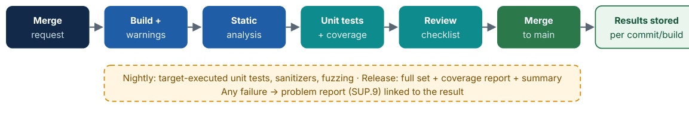
7.4What the assessor asks
The assessor's typical questions for SWE.4, with answers that work, are collected in Q.4 at the end of the chapter, so you can rehearse them in one place.
- Unit tests written from the code: they confirm the implementation instead of checking the design.
- No pass/fail criteria for static analysis or review — "we ran the tool".
- Coverage measured but no target, or target not justified; gaps not analysed.
- Failing or disabled tests without problem reports ("known failures").
- Results not linked to a software version or not kept (CI artefacts expire after 7 days).
- Code reviews without evidence of what was checked — an "LGTM" approval alone is weak evidence.
- Unit verification specification: measures, criteria, environment (can be test code with structured headers plus a strategy document)
- Selection/regression rules and the CI configuration implementing them
- Results per release: test reports, coverage reports, static analysis reports with deviation justifications, review records
- Trace: measures ↔ design elements/units; results ↔ measures; failures ↔ problem reports
- Summary report and evidence it was communicated (release notes, dashboard, status meeting)
8SWE.5 Software Component Verification and Integration Verification
SWE.5 is where the architecture is put to the test. Units become components, components become the integrated software, and at every step you verify that the pieces talk to each other exactly as the architecture promised — formats, timing, ordering, resource use. For an AUTOSAR ECU with a CDD, this is also where the configuration work becomes visible.
Integrate the software elements step by step into the integrated software, and verify both the interaction of the integrated elements (against the architecture) and the behaviour of each component.
Software architecture (static, dynamic, budgets), verified units, component specifications, integration strategy (Level 2), BSW/third-party deliveries.
Integration sequence, integration and component verification measures, integrated software, results, traces, summary.
Most defects that survive unit verification are interface defects: a buffer released too early, a timestamp in the wrong clock domain, a signal scaled twice, a runnable mapped to the wrong task, a module initialised before the driver it depends on. They are invisible to unit tests (which use mocks) and very expensive to locate in system tests (where everything runs at once). Integrating stepwise and verifying each step against the architecture makes them cheap to find and easy to localise.
8.1What has to be done — the base practices
| BP1 | Specify software integration verification measures Derived from the architecture: interfaces (content, ranges, rates), dynamic behaviour (sequences, modes, timing chains) and resource consumption objectives. Each measure has pass/fail criteria and an environment. |
|---|---|
| BP2 | Specify verification measures for software component behaviour Check that each component — a group of integrated units — behaves as specified for that component, for example the stitching component on recorded camera data. |
| BP3 | Select verification measures Decide which measures run for a given integration step, release or change, including regression. |
| BP4 | Integrate software elements and verify the integrated software Follow the defined integration sequence, run the selected integration verification measures at each step, record results. |
| BP5 | Perform software component verification Run the component measures and record results. |
| BP6 | Ensure consistency and establish bidirectional traceability Integration measures ↔ architecture elements (interfaces, sequences, budgets); component measures ↔ components; results ↔ measures. |
| BP7 | Summarise and communicate results Integration status per build or release, open issues, measured budgets versus objectives. |
8.2Surround view example: an integration sequence for the pipeline
A vision pipeline lends itself to bottom-up integration along the data flow, using recorded camera data so that every step is reproducible. Each step adds elements and verifies only what is new: the interfaces just connected and the timing they introduce.
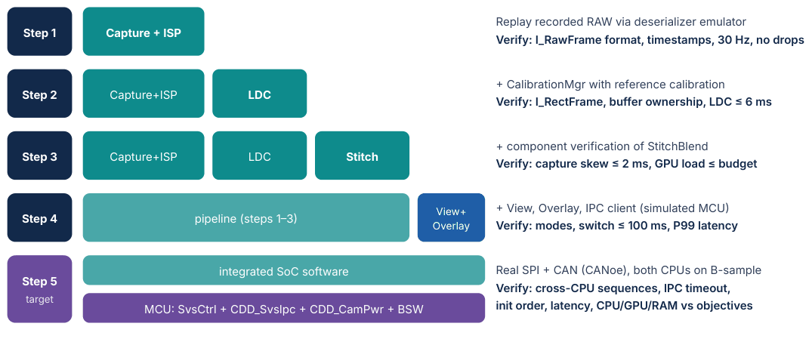
Integration verification asks: "do the parts interact as the architecture says?" Example: IVM-SVS-INT-12 — all four images of a set handed to StitchBlend have capture timestamps within 2 ms; measured over 10 000 frames of the recorded drive "parking garage 03"; pass if max skew ≤ 2 ms and no set dropped. Component verification asks: "does the stitching component do its job?" Example: CVM-STITCH-04 — on the calibration hall recording, seam misalignment of the checkerboard lines at 1 m, 2 m and 3 m ≤ 4 px in the top view. Both are SWE.5 — but they trace to different things: the first to an interface and a sequence in the architecture, the second to the component's specified behaviour.
8.3CDD integration into the AUTOSAR platform
Integrating a CDD into a Classic AUTOSAR ECU is a configuration-heavy activity. Each step produces artefacts that the assessor will look for — some under SWE.5, some under configuration management (SUP.8). The figure shows the typical flow.
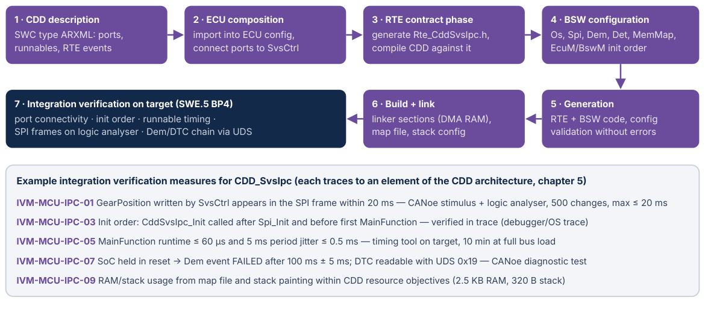
- The BSW configuration is a work product. The ECU configuration project (ARXML / .epc / DaVinci project files) is under version control, changes are reviewed (diff of the ARXML or of the generated reports), and each integrated software build references the configuration revision it was generated from.
- Generator and validation output is kept. RTE/BSW generator logs with zero errors and reviewed warnings are cheap, strong evidence that the configuration is consistent.
- Supplier deliveries are integrated deliberately. When a new MICROSAR, EB tresos or MCAL release arrives, the integration verification measures affected by it are selected and re-run, and the supplier's release notes and known-issue lists are evaluated (which links to supplier monitoring, ACQ.4).
- Error paths are integrated too. The happy path (signals flow) is easy; assessors like to ask how you verified that a Dem event actually reaches the DTC memory and is readable over UDS.
8.4What the assessor asks
The assessor's typical questions for SWE.5, with answers that work, are collected in Q.5 at the end of the chapter, so you can rehearse them in one place.
- "Big bang" integration: everything is built and immediately tested against requirements; no integration verification against the architecture.
- Integration tests exist but trace to requirements only — interfaces, sequences and resource objectives are never verified.
- Resource consumption objectives from SWE.2 are never measured.
- AUTOSAR configuration not under configuration management or changed without review.
- No component verification: components are only ever tested inside the full system.
- Results not linked to the integrated software version and configuration revision.
- Integration strategy (Level 2) and integration sequence with verification focus per step
- Integration and component verification measures with pass/fail criteria and environment
- Results per integration step/build, including timing and resource measurements against objectives
- Trace: measures ↔ architecture elements / components; results ↔ measures; failures ↔ problem reports
- AUTOSAR configuration revision, generator logs and review records for each integrated build
9SWE.6 Software Verification
SWE.6 closes the software V: the complete, integrated software is verified against the software requirements, on an environment as close to the real ECU as practical. Its summary is the software team's evidence for a release decision — and the document an OEM is most likely to read.
Verify that the integrated software meets the software requirements, and summarise the results so that a release decision can be made on facts.
Software requirements with verification criteria, integrated software (from SWE.5), verification strategy and release plan (Level 2), test environment.
Software verification measures, selection per release, results, traces, verification summary / release report.
The OEM bought software requirements, not units or architectures. Before software leaves your hands, someone has to demonstrate — requirement by requirement — that the delivered build does what was agreed, including the non-functional promises: latency, start-up time, degraded behaviour, diagnostics. Without this, a release is a hope. With it, a release is a decision with known open points.
9.1What has to be done — the base practices
| BP1 | Specify verification measures for software verification For every software requirement, using its verification criteria: test cases or other measures with preconditions, stimuli, expected results and pass/fail criteria, executed on the integrated software in a defined environment. Include negative and robustness cases and the non-functional requirements. |
|---|---|
| BP2 | Select verification measures Per release, based on the release scope and the changes since the last verified version; define the regression set. Traceability is what makes change-based selection credible. |
| BP3 | Verify the integrated software Execute the selected measures and record results with the exact software version, configuration and environment. |
| BP4 | Ensure consistency and establish bidirectional traceability Measures ↔ software requirements; results ↔ measures. The forward direction answers "is every requirement verified?", the backward direction "which requirement does this failing test affect?". |
| BP5 | Summarise and communicate results A verification summary per release: requirement coverage, passed / failed / not executed, open problem reports with their assessment, and who was informed. |
9.2Which verification belongs where?
Assessors frequently probe whether teams understand the difference between the verification levels. The distinguishing question is always: against what reference is this verification done?
| Process | Verifies against | Object under test | SVS example |
|---|---|---|---|
| SWE.4 | Detailed design | Unit (host and/or target) | LUT generator deviation ≤ 0.05 px vs reference |
| SWE.5 | Architecture; component spec | Partially / fully integrated SW | 4-camera capture skew ≤ 2 ms; CDD runtime ≤ 60 µs |
| SWE.6 | Software requirements | Fully integrated SW on target | Layout switches to Rear+Top ≤ 100 ms after valid REVERSE |
| SYS.4 | System architecture | Integrated ECU / system elements | ECU with real cameras: link lock, power-over-coax, video to head unit |
| SYS.5 | System requirements | Complete system | Rear image ≤ 2.0 s after gear R, in vehicle or full HIL |
| VAL.1 | Intended use / stakeholder needs | Product in real use | Drivers judge parking usability; night and rain drives |
9.3Surround view example: a software verification environment
Several SVS software requirements are about time. Measuring time honestly requires an environment that observes the real output — not a log line written by the software about itself. A widely used setup is an optical latency rig:
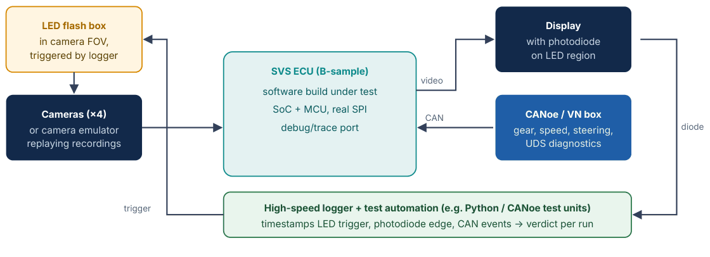
| Measure | Verifies | Procedure (abbreviated) | Pass criterion |
|---|---|---|---|
| SWV-SVS-0320 | SWRS-SVS-0320 | Latency rig, 1000 LED flashes per camera, layout Rear+Top | P99 ≤ 120 ms, max ≤ 150 ms |
| SWV-SVS-0451 | SWRS-SVS-0451 | CAN gear D→R, 200 repetitions at 0 and 8 km/h; layout change from compositor trace and photodiode | max ≤ 100 ms after IPC frame |
| SWV-SVS-0452 | SWRS-SVS-0452 | Negative: invalid GearPosition status; SPI line cut by relay box during reverse | view kept, banner ≤ 500 ms, no crash |
| SWV-SVS-0440 | SWRS-SVS-0440 | Cold start with gear R at power-up, 100 power cycles | first valid rear frame ≤ 1.4 s, all cycles |
| SWV-DIA-0190 | SWRS-DIA-0190 | UDS 0x31 start EOL calibration routine on target pattern, read result, power cycle, read DID | positive response, result persists |
Vision teams sometimes say "image quality cannot be specified, it is subjective". It can be specified enough to verify: seam misalignment in pixels at defined distances, brightness difference across seams in a defined scene, absence of frozen frames (frame counter monotonic, content hash changes), black-image detection time. Subjective acceptance ("does it look good to drivers?") is real, but it belongs to validation (VAL.1) and OEM acceptance — not to SWE.6. Separating the two keeps your SWE.6 criteria objective.
The CDD's software requirements are verified black-box through the ECU's real interfaces, on the full MCU software build: SWRS-MCU-0220 (IPC timeout → Dem event within 100 ms) is tested by holding the SoC in reset from the test system and reading the DTC via UDS 0x19 with the expected status byte; SWRS-MCU-0210 by changing GearPosition on CAN and measuring the SPI frame with a protocol analyser. Internal states (SYNCING, LOST) are not the reference here — they were verified in SWE.4 and SWE.5. If a requirement can only be observed internally (for example a WCET limit), say so in its verification criteria and verify it with an appropriate measure, such as the timing measurement from SWE.5 reused as evidence.
From results to a release decision
The verification summary is a short, factual report per release. A typical structure that satisfies BP5 and supports the release decision:
- Software version / baseline ID, environment configuration
- Requirement coverage: agreed requirements in scope, verified, passed, failed, not executed (with reason)
- Regression scope and why it is sufficient
- Failed items: problem report, severity, risk assessment, decision
- Recommendation: release / release with restrictions / no release
R2.0 (baseline SVS_R2.0_RC3): 412 agreed SW requirements in scope · 409 verified · 404 passed · 5 failed (PR-1187 … PR-1191: 4 minor HMI cosmetic, 1 latency outlier at −30 °C → analysis ongoing, deviation agreed with OEM on 2026-09-24) · 3 not executed (EOL hardware not available; planned R2.1). Recommendation: release for B-sample with known restrictions.
9.4What the assessor asks
The assessor's typical questions for SWE.6, with answers that work, are collected in Q.6 at the end of the chapter, so you can rehearse them in one place.
- Test cases describe features ("test the top view") rather than verifying specific software requirements; coverage cannot be shown.
- Non-functional requirements (timing, start-up, robustness, resource limits) are not verified at all.
- Expected results missing or vague ("image looks OK").
- Results not tied to a specific software build and environment configuration.
- Release despite failed tests without a documented decision or risk assessment.
- Regression selection is ad hoc; nobody can explain why certain tests were skipped.
- Software verification specification: measures per requirement with expected results and criteria
- Description of verification environments (rig, HIL, simulators) and their configuration per run
- Selection record per release (scope, regression rationale)
- Results per build; trace measures ↔ requirements and results ↔ measures; failures ↔ problem reports
- Verification summary per release and evidence of its communication and of the release decision
10Level 2 in practice: PA 2.1 and PA 2.2
Level 1 asks whether the engineering was done. Level 2 asks whether it was managed: planned against objectives, resourced, monitored and corrected, with outputs that meet defined requirements, are controlled, and are reviewed. The ten generic practices are identical for every process — but they are rated separately for SWE.1, SWE.2, … SWE.6, so you need evidence for each.
A Level 1 team can deliver good software — once. The OEM needs it to happen again for the next sample, with a different team member on holiday and a late requirement change in the middle. Level 2 practices are what make a result repeatable: if work is planned, someone notices when it slips; if outputs have defined quality criteria and are reviewed, quality does not depend on who happened to write them; if they are controlled, everyone works on the right version.
10.1PA 2.1 Performance management
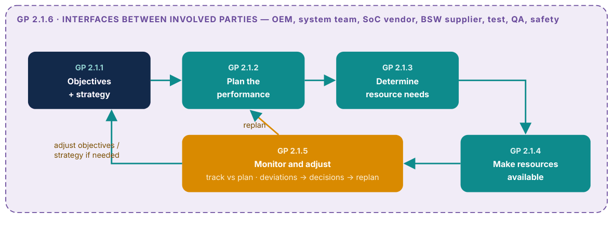
| Generic practice | What it means | Example evidence for the SWE processes (SVS project) |
|---|---|---|
| GP 2.1.1 Objectives & strategy | Know what the process should achieve (scope, quality targets, timing) and how you intend to perform it. | SW verification strategy: levels, environments, coverage targets, regression rules, target-vs-simulation policy · integration strategy · requirements approach (sources, attributes, review rules) · objectives per release ("R2.0: all SWRS for rear view verified on B-sample by KW 40"). |
| GP 2.1.2 Plan | Activities, schedule, milestones, dependencies and responsibilities for performing the process. | Release plan and Jira epics/stories for each SWE activity (e.g. "SWE.2: update dynamic view for cold start", "SWE.6: execute latency suite on RC3") with owners and target dates; links to the project plan (MAN.3). |
| GP 2.1.3 Resource needs | Which people, skills, tools, licences, infrastructure and budget are needed. | Needs list: 2 HIL/latency rigs, 4 camera sets, B-samples, CANoe licences, timing analysis tool, a vision engineer with AUTOSAR timing know-how for CDD integration. |
| GP 2.1.4 Make resources available | Actually provide them: assign competent people, train them, procure equipment. | Staffing plan with roles; training records (e.g. MISRA, CANoe test automation); procurement ticket for second latency rig; competence matrix. |
| GP 2.1.5 Monitor & adjust | Track performance against the plan and objectives, detect deviations, decide and document corrective actions. | Sprint/release burn-down, test progress and coverage dashboards; status-meeting minutes: "latency rig delivery delayed 3 weeks → SWE.6 timing tests moved to RC4; OEM informed; risk logged". |
| GP 2.1.6 Interfaces | Identify involved parties, agree responsibilities and communication, and make it work. | RACI / responsibility matrix (who owns IPC spec, who approves SW requirements), interface agreements with SoC vendor and BSW supplier, regular alignment meetings with the system team, minutes with actions. |
Plans are easy to show; evidence that the team reacted to deviations is what separates L from F. A realistic example: the GPU load measurement in the nightly SWE.5 run exceeded the 70 % objective after enabling the 3D bowl view. The architect raised it in the weekly technical meeting, the decision was "reduce bowl mesh resolution and move photometric harmonisation to every second frame", a task was created, the next nightly showed 64 %. The meeting minutes, the Jira task and the trend chart together are textbook GP 2.1.5 evidence — for SWE.2 (objective) and SWE.5 (monitoring).
10.2PA 2.2 Work product management
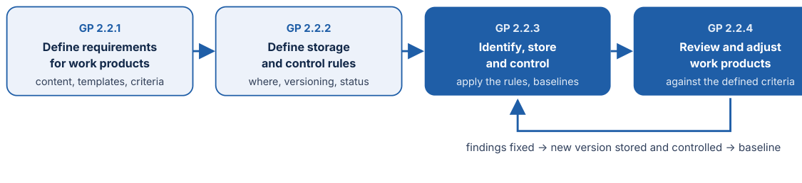
| Generic practice | What it means | Example evidence for the SWE processes |
|---|---|---|
| GP 2.2.1 Requirements for work products | Define expected content/structure and quality criteria for each work product, including how it is reviewed and approved. | Requirements writing rules (one statement, measurable, verification criteria mandatory); architecture template (static, dynamic, budgets, decisions); test specification template; review checklists per work product; Definition of Done. |
| GP 2.2.2 Storage & control requirements | Define how work products are identified, stored, versioned, access-controlled, baselined, and which status model applies. | CM plan / repository guideline: requirements in Polarion with status workflow; architecture in EA under SVN/Git; code and test code in GitLab with branch rules; test results archived per build for N years; naming conventions. |
| GP 2.2.3 Identify, store, control | Apply those rules in reality. | Work products are where the plan says, with version history; release baselines contain the right versions; protected branches enforced. |
| GP 2.2.4 Review and adjust | Review work products against the defined requirements; handle findings until closed. | Review records of the SW requirement baseline, the architecture, the test specification; merge request reviews with checklist; finding lists with closure; re-review of major changes. |
A review record does not need to be a heavy form, but it should let an outsider answer six questions: what was reviewed (object and version), who reviewed it (and were they competent and appropriately independent), against what (checklist or criteria from GP 2.2.1), what was found, what was decided, and was the fix verified. A merge request with a filled checklist template, resolved threads and an approval by a named reviewer satisfies this well. A meeting invitation titled "architecture review" with no minutes does not.
10.3The Level 2 evidence matrix for SWE
Because the GPs are rated per process, it helps to prepare one row per process. Here is a filled-in example for the SVS project — use it as a template for your own preparation.
| Process | Objectives / strategy (2.1.1) | Plan & monitoring (2.1.2 / 2.1.5) | Work product criteria (2.2.1) | Review evidence (2.2.4) |
|---|---|---|---|---|
| SWE.1 | Requirements approach: sources, attributes, status model, agreement with OEM per release | Epics per release for requirement refinement; open-items count tracked weekly | Writing rules, mandatory attributes, verification criteria rule | Baseline review with system, architecture and test participants |
| SWE.2 | Architecture views required, resource objectives, ADR practice | Architecture tasks in sprint plan; budget trend reviewed in tech meeting | Architecture template, interface definition checklist | Architecture review per release; ADR approvals |
| SWE.3 | Unit definition, design depth, coding guideline per CPU | Design + implementation stories with DoD; MR throughput | DD template, coding guideline, MR checklist | MR reviews with design check; deviation approvals |
| SWE.4 | Verification strategy: measures, coverage targets, host/target policy | CI pipeline; coverage and static-analysis trend per sprint | Unit test spec rules (trace, criteria), static analysis config | Review of test code in MRs; review of coverage gap justifications |
| SWE.5 | Integration strategy + sequence; budget measurement plan | Integration milestones per BSW/SoC delivery; nightly integration status | Integration measure template; AUTOSAR config review rules | Review of integration spec; config diff reviews |
| SWE.6 | SW verification strategy; regression and target/simulation policy | Test plan per release; execution progress dashboard | Test case template with expected results; summary report template | Test spec review incl. requirement owner; summary sign-off |
Scrum fits Level 2 well, as long as the artefacts cover every process in scope. Planning: backlog items exist for requirements, architecture and verification work — not only "features". Monitoring: sprint reviews and burn-downs, plus process-specific indicators such as test coverage. Adjusting: decisions from reviews and retrospectives are recorded and lead to backlog changes. Work product requirements: the Definition of Done references templates and checklists ("architecture updated", "unit tests trace to design", "MISRA clean"). The usual gap: stories are "implement trajectory lines" with no visible SWE.2 or SWE.6 work, so the assessor cannot see planning for those processes.
- Only a project-level Gantt chart exists; activities of individual processes (e.g. SWE.5 integration steps) are not planned.
- Strategies are generic company documents not tailored to the project (e.g. "coverage as appropriate").
- Deviations visible in the data but no recorded reaction (missing GP 2.1.5 "adjust").
- Resources such as HIL benches or B-samples were never planned; competences not ensured (no training for new team members).
- Interfaces to the OEM, system team or suppliers not defined — nobody knows who approves the IPC specification.
- No defined criteria for work products, so reviews have nothing to check against; or reviews not recorded at all.
- Work products outside configuration management: test specification in a personal folder, AUTOSAR configuration on a local PC.
11Adjacent processes assessors ask about
Even if your interviews are scheduled for SWE only, assessors follow threads across process boundaries: a failed test leads to problem resolution, a changed requirement to change management, a release to configuration management. You do not need to own these processes, but you must know how your work plugs into them.
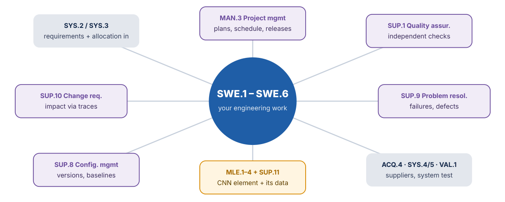
11.1SYS.2 / SYS.3 — where your inputs come from
Your SWE.1 can only be as good as the allocation it receives. If system requirements are vague or not allocated to software explicitly, an assessor will see that in your traces. Two things to be able to show: how you received and accepted the system requirements and architecture (a review or acceptance step), and how you feed problems back — for example the 2.0 s feasibility issue from chapter 4, raised as a change request to the system team. "The system requirements were bad, so ours are too" is not a defence; "we found these issues, raised them here, and this is their status" is.
11.2MAN.3 Project management
MAN.3 covers scope, estimation, schedule, release planning, resources and monitoring at project level. For you, the important link is consistency: the process-level plans you show for GP 2.1.2 (sprint backlog, test plan, integration milestones) must fit the project plan and release plan. If the project plan says B-sample software release in week 40 and your SWE.6 plan has the latency tests in week 42, expect a question.
11.3SUP.1 Quality assurance
QA independently checks that work products and process execution comply with what was defined (plans, templates, guidelines), reports non-conformities and escalates if they are not resolved. Engineers typically meet QA through process audits and work product checks. Know that QA has looked at your work, where the findings are recorded and how you closed them. A QA function that never found anything is a weaker signal than one with findings that were resolved.
11.4SUP.8 Configuration management
Configuration management makes sure everyone uses the right versions and that any delivered state can be reproduced. It underpins PA 2.2 for all SWE processes. A practical test an assessor might do: "Give me everything that belongs to release R2.0 — requirements, architecture, code, AUTOSAR configuration, test specification, test results, tool versions."
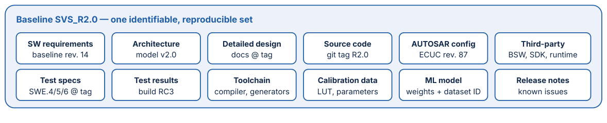
11.5SUP.9 Problem resolution and SUP.10 Change request management
These two are often confused. A problem is something that does not behave as specified (a failed test, a field issue, a review finding that escaped); a change request is a wish to change what is specified (new feature, changed signal, modified requirement). Both need recording, analysis, a decision, implementation, verification and closure — and both depend on your traceability for impact analysis.
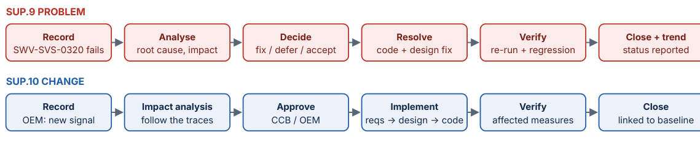
Assessment tip: when you show a failed test result in SWE.4/5/6, the assessor will very likely click through to the problem report. Make sure it has an analysis, a decision and a status — and, for closed ones, a reference to the verification of the fix.
11.6ACQ.4 Supplier monitoring
An SVS project depends on suppliers: the AUTOSAR BSW vendor, the SoC vendor's SDK and ISP driver, perhaps an external HMI or a neural-network model supplier. If ACQ.4 is in scope, the question is whether you agreed what they deliver (content, quality, schedule, interfaces), whether you monitor progress and quality through joint reviews and delivery checks, and whether problems are tracked to closure. Your SWE.5 evidence of "re-verifying after a BSW delivery" and evaluating release notes is a natural contribution.
11.7MLE.1–MLE.4 and SUP.11 — when the vision system contains a neural network
ASPICE 4.0 added processes for machine learning because a trained model cannot be specified, designed and verified like hand-written code. The split of responsibilities in an SVS with moving-object detection typically looks like this:
| Process | What it covers | SVS example |
|---|---|---|
| MLE.1 | ML requirements, including data requirements and KPIs | Detect pedestrians ≥ 0.9 m tall within 3 m; recall ≥ 98 % / false alarms ≤ 1 per hour; operating conditions (night, rain, low sun) |
| MLE.2 | ML architecture: model structure, hyperparameters, training setup | Network topology, input resolution after undistortion, quantisation approach for the SoC accelerator |
| MLE.3 | ML training with defined training/validation data and reproducible runs | Training runs logged with dataset IDs, code version, hyperparameters, resulting model hash |
| MLE.4 | ML model testing against the ML requirements on independent test data | KPI evaluation per scenario class on a test set never used in training; deployed (quantised) model re-tested |
| SUP.11 | ML data management: data provenance, labelling quality, versioning, data set composition | Recording campaigns, label guidelines and label audits, data set versions frozen per model release |
| SWE (2–6) | The software around the model | Pre/post-processing units, inference runtime integration, timing on target (SWE.5), detection warning requirement (SWE.6) |
11.8Neighbouring standards — how they relate
| Standard | Relationship to your ASPICE evidence |
|---|---|
| ISO 26262 (functional safety) | If an SVS function has safety relevance (e.g. detection of frozen or stale images, depending on the OEM's hazard analysis), ISO 26262 adds requirements on methods and rigour (e.g. coverage, independence of reviews). ASPICE processes provide the backbone; safety adds content. One set of work products should serve both. |
| ISO 21448 (SOTIF) | Performance limitations of perception — e.g. glare, dirt on lenses — are a SOTIF topic and influence ML and verification requirements. |
| ISO/PAS 8800 (AI safety) | Guidance for safety of AI elements in road vehicles; complements MLE processes for safety-relevant ML. |
| ISO/SAE 21434 + ASPICE for Cybersecurity | Security requirements (e.g. secure diagnostics for calibration routines, authenticated SPI/IPC if required) flow into SWE like other requirements; the cybersecurity PAM adds specific processes if in scope. |
| Regulations (e.g. rear visibility) | Sources of system requirements such as the rear-image timing — and therefore of strict, verifiable software requirements. |
12How an assessment runs, and how to take part
An assessment is a structured conversation in which you show how you work and prove it with evidence. Assessors are not looking for perfect projects; they are looking for a consistent, honest picture backed by records. Preparation is mostly about being able to find and explain your own evidence quickly.
12.1How an assessment runs
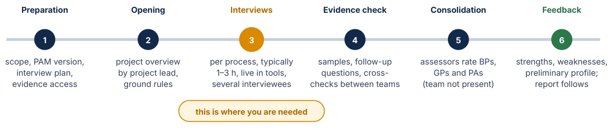
12.2Prepare a "golden thread"
The single most effective preparation is to rehearse one end-to-end trace through your own tools, for a feature you know well. Assessors almost always pick a sample and follow it. If you can walk the whole chain in ten minutes without searching, you demonstrate traceability, consistency, verification and configuration management at once — and you gain confidence for every other question.
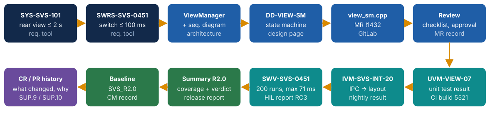
12.3Answering in assessment interviews
| Do | Avoid |
|---|---|
| Show, don't tell. Open the tool and navigate to real items. A live trace is worth more than a slide. | Presenting polished slides that summarise the process without opening a single real work product. |
| Answer the question asked, briefly, then stop. Let the assessor lead. | Long monologues that drift into areas the assessor did not ask about — they generate new questions. |
| Describe what you actually do, in your own words, including where you deviate from the handbook and why. | Reciting the process handbook. If practice differs, the assessor will find out from the evidence. |
| Be honest about gaps: "That part is not designed yet; it is tracked in PR-1203 for R2.1." | Inventing an answer or a process on the spot. Inconsistencies between interviewees are rated harshly. |
| Say "I don't know, but X owns that" and name the person or the record. | Guessing about another team's work. |
| Explain the reason behind a practice (the risk it controls). | "Because ASPICE requires it" — it suggests the practice is done for the assessment, not for the product. |
| Use precise words: verification measure, baseline, traceability, impact analysis. | Absolute claims such as "we always", "every requirement", "never" — unless you can prove them on a sample. |
- "Let me show you that in the tool." — and then do it.
- "The rule is defined here [strategy/guideline]; here is an example where we applied it, and here is one where we deviated, with the decision."
- "We noticed this weakness ourselves in the last internal assessment; this is the improvement action and its status."
- "This requirement is traced to these three verification measures; two passed on RC3, one failed and is linked to PR-1187."
12.4Typical assessor questions
Questions in assessments recur. Practise answering each of these with real evidence from your project.
| Area | Question |
|---|---|
| SWE.1 | Where do your software requirements come from, and how do you know none is missing? · Show non-functional requirements. · Who agreed the requirements and when? · How are interface requirements (CAN/IPC/ARXML) handled? |
| SWE.2 | Show the dynamic behaviour for start-up and an error case. · What are the resource objectives and how are they checked? · Why did you choose this design over the alternative? · Where are third-party components? |
| SWE.3 | What is a unit? · Show design and code for one unit and explain how they are kept consistent. · How do you handle MISRA deviations? · What about generated code? |
| SWE.4 | How were test cases derived? · What are your pass/fail criteria for static analysis and review? · Why is the coverage target X? · Which version do these results belong to? |
| SWE.5 | What is the integration strategy and sequence? · Show an integration test that verifies an interface or timing from the architecture. · How is the AUTOSAR configuration controlled? · What did you re-verify after the last BSW delivery? |
| SWE.6 | Show requirement coverage for the last release. · How was the regression set chosen? · Which tests run on target and why? · Who decided to release with open failures? |
| Level 2 | Where is the plan for this process, and how do you track it? · Show a deviation and how you reacted. · Which resources did you need and how did you get them? · Who are the involved parties and how do you communicate? · What are the quality criteria for this work product, and where is the review record? |
| Cross | A test failed — show the problem report. · A requirement changed — show the impact analysis. · Give me everything that belongs to release R2.0. |
12.5The findings that appear again and again
- Traceability incomplete or one-directional
- Traces exist but content inconsistent
- Requirements without verification criteria
- Missing non-functional requirements
- Architecture without dynamics or budgets
- Integration tests that only re-test requirements
- Tests derived from code instead of design
- Results not linked to a software version
- No process-level planning (only project Gantt)
- No evidence of reacting to deviations
- Strategies generic, not project-specific
- Resources (HIL, samples, skills) not planned
- Responsibilities and interfaces undefined
- No quality criteria for work products
- Reviews not recorded or without criteria
- Work products outside configuration management
- Two weeks before: confirm scope and PAM version; get the interview plan; walk your golden thread; read your own strategies and plans so that what you say matches what they say; check that review records and results for the last release are complete and findable.
- One week before: align with colleagues who will be interviewed for neighbouring processes (same definitions of unit, regression, baseline); prepare bookmarks/saved queries in each tool (coverage views, trace reports, dashboards).
- The day before: check tool access and permissions from the meeting room, VPN, licences; open the key items once so caches are warm; have the latest release baseline ID at hand.
- In the interview: listen fully, answer briefly, show evidence, be honest about gaps, and note any follow-up items you promised.
13Cheat sheet and version mapping
The six SWE processes and Level 2 on one page, and the 3.1 → 4.0 mapping for programmes still using the older model. The glossary follows at the end of the chapter.
13.1Cheat sheet
Goal: refined, analysed, agreed SW requirements with verification criteria. Show: requirement set with attributes · feasibility/impact analysis · baseline review · OEM agreement.
Trace: ↔ system requirements and ↔ system architecture. Killer question: "Which system requirement allocated to SW has no software requirement?"
Goal: elements, interfaces, dynamics, resource objectives, justified decisions. Show: static + dynamic views · interface definitions · budgets (latency, CPU/GPU, RAM) · ADRs. Trace: SW requirements ↔ architecture elements. Killer question: "What happens when the SoC reboots during reverse?"
Goal: units designed precisely enough to implement and verify; code per guideline. Show: unit definition · design cards (static + dynamic) · code · MISRA deviations. Trace: design ↔ architecture; units ↔ design. Killer question: "How do you keep design and code consistent?"
Goal: units proven against the design, code meets rules. Show: measures with criteria (static analysis, review, tests, coverage) · CI selection rules · results per build. Trace: measures ↔ units/design; results ↔ measures. Killer question: "Were these tests derived from the design or from the code?"
Goal: stepwise integration; interfaces, sequences, budgets and components verified. Show: integration sequence · measures tracing to architecture · timing/resource measurements · AUTOSAR config revision. Trace: measures ↔ architecture elements / components; results ↔ measures. Killer question: "How is this different from your SWE.6 test?"
Goal: integrated SW proven against SW requirements; facts for release. Show: measures per requirement · environment (rig/HIL) · regression selection · summary report · release decision. Trace: measures ↔ SW requirements; results ↔ measures. Killer question: "Show requirement coverage for the last release."
GPs: objectives + strategy · plan · resource needs · make resources available · monitor and adjust · manage interfaces. Show per process: strategy, backlog/plan with owners, resource list, dashboards, a recorded deviation and the reaction, RACI. Killer question: "Show me a time this process went off-plan and what you did."
GPs: requirements for work products · storage/control rules · identify, store, control · review and adjust. Show per process: templates and checklists, CM rules, baseline contents, review records with closed findings. Killer question: "Against which criteria was this document reviewed?"
PA 1.1 = F (all engineering base practices solid, including traceability and consistency) + PA 2.1 ≥ L + PA 2.2 ≥ L, rated separately for each process. Weak engineering cannot be compensated by good management evidence.
13.2Automotive SPICE 3.1 → 4.0 mapping for SWE and Level 2
| Process | Version 3.1 (base practices, condensed) | Version 4.0 |
|---|---|---|
| SWE.1 | Specify · structure · analyse · impact on operating environment · develop verification criteria · traceability · consistency · communicate (BP1–BP8) | BP1–BP6. Verification criteria now a requirement characteristic in BP1; traceability and consistency merged into BP5. |
| SWE.2 | Develop architecture · allocate requirements · define interfaces · dynamic behaviour · resource consumption objectives · evaluate alternatives · traceability · consistency · communicate (BP1–BP9) | BP1 static (incl. interfaces, allocation) · BP2 dynamic · BP3 analyse (resources, alternatives, rationale) · BP4 trace + consistency · BP5 communicate. |
| SWE.3 | Detailed design · unit interfaces · dynamic behaviour · evaluate detailed design · traceability · consistency · communicate · develop units (BP1– BP8) | BP1 static · BP2 dynamic · BP3 develop units · BP4 trace + consistency · BP5 communicate. Separate evaluation BP removed. |
| SWE.4 | Strategy incl. regression · criteria · static verification · test units · traceability · consistency · summarise (BP1–BP7) | BP1 specify measures · BP2 select · BP3 verify · BP4 trace + consistency · BP5 summarise. Strategy moved to GP 2.1.1. |
| SWE.5 | "Software Integration and Integration Test": integration strategy · test strategy · test specification · integrate · select tests · perform tests · traceability · consistency · summarise (BP1– BP9) | Renamed "Software Component Verification and Integration Verification"; BP1–BP7; component verification added explicitly; strategies moved to GP 2.1.1. |
| SWE.6 | "Software Qualification Test": strategy · specification · select · test · traceability · consistency · summarise (BP1–BP7) | Renamed "Software Verification"; BP1–BP5; "test" generalised to "verification measure". |
| PA 2.1 | GP 2.1.1 objectives · 2.1.2 plan · 2.1.3 monitor · 2.1.4 adjust · 2.1.5 responsibilities and authorities · 2.1.6 resources · 2.1.7 interfaces | GP 2.1.1 objectives + strategy · 2.1.2 plan · 2.1.3 resource needs · 2.1.4 make resources available · 2.1.5 monitor and adjust · 2.1.6 interfaces |
| PA 2.2 | GP 2.2.1 work product requirements · 2.2.2 documentation and control requirements · 2.2.3 identify, document, control · 2.2.4 review and adjust | Same four ideas; "storage and control"; "work products" are now "information items" in the PAM. |
| New in 4.0 | — | MLE.1–4 and SUP.11 (machine learning), HWE.1–4 (hardware), VAL.1 (validation); plug-in scoping of process groups. |
QSelf-check questions
Questions an assessor typically asks for each SWE process, with model answers that point to evidence: open the tool, show the trace, name the record. Section 12.4 lists more typical questions; the last group checks understanding with why and what if.
Q.1SWE.1 Software Requirements Analysis
Show me how SYS-SVS-101 is broken down into software requirements.Assessor
Opens the requirements tool, filters on the parent, shows the five children, their budgets and the feasibility note. Explains why the budgets are split this way.
How do you know every system requirement allocated to software is covered?Assessor
"We run a coverage view at every baseline: all system requirements with allocation 'SW' and no child link. Here is the report from baseline R2.0 — zero open items; two were deliberately covered by a rationale instead of a child requirement, and the rationale was reviewed."
Where are the verification criteria for this requirement — and who checked them?Assessor
Shows the attribute, then the review record of the requirement baseline, where the test lead participated specifically to check verifiability.
The OEM changes the steering angle signal resolution. What happens?Assessor
"It arrives as a change request. We follow the trace from the signal to SWRS-MCU-0210 and SWRS-SVS-0610 (trajectory lines), assess the impact on CDD_SvsIpc scaling and the overlay renderer, update the requirements, re-review them and notify architecture and test. The CR record shows each step."
Q.2SWE.2 Software Architectural Design
Show me where SWRS-SVS-0451 is allocated in the architecture.Assessor
Follows the trace to the ViewManager element, then shows the sequence diagram where its 100 ms budget appears.
What happens if the SoC reboots while the driver is reversing?Assessor
Shows the dynamic view of the IPC state machine and the DEGRADED mode, and the requirement it implements. If this case is not designed, say so honestly and point to the open problem report — never improvise a design in the interview.
How do you know the GPU budget is respected?Assessor
"The budget is set in the architecture analysis; SWE.5 measures GPU load per component on target in the nightly performance run; here is the trend over the last ten builds."
Where are the third-party components in your architecture?Assessor
Shows the vendor ISP library, inference runtime and AUTOSAR BSW as architecture elements with version, interfaces and the requirements they fulfil.
Q.3SWE.3 Software Detailed Design and Unit Construction
What is a software unit in your project?Assessor
"One .c/.h module on the MCU, one class with its header on the SoC — defined in the SW development plan, section 4.2." Everyone in the team gives the same answer.
Show me the design of the LUT generator and the code that implements it.Assessor
Opens the design page, follows the trace to lut_gen.cpp, points out where the Q12.4 conversion and INVALID marking happen.
How do you keep design and code consistent when the code changes?Assessor
"Our merge request template has a mandatory item 'design affected? updated?'; the reviewer checks it. Here is an MR where the design was updated together with the code, and one where the reviewer rejected the change because the design was not."
Which coding guideline applies, and how do you handle deviations?Assessor
Names the guideline per processor, shows the deviation records with justification and approval.
Q.4SWE.4 Software Unit Verification
How did you derive the unit test cases for this unit?Assessor
"From the detailed design: each interface range, each state transition and each error case in the design card has at least one test. The test IDs are referenced in the design and the trace report shows no uncovered design element."
Why is your coverage target 90 % branch and not 100 %?Assessor
Explains the rationale in the strategy (QM software, defensive code paths unreachable without fault injection) and shows the justification list for each remaining gap.
Three tests are red in this report. What happened?Assessor
Shows the linked problem reports, their analysis and the decision (fix planned in release R2.1, risk accepted by project lead). Never: "those always fail".
Which software version do these results belong to?Assessor
Shows the commit hash and build ID in the result header and the baseline that contains it.
Q.5SWE.5 Software Component Verification and Integration Verification
What is your integration strategy, and where is the integration sequence?Assessor
Shows the strategy (bottom-up along the data flow on the SoC, MCU integrated per BSW delivery, both joined on the B-sample) and the sequence with its steps and verification focus.
How is this integration test different from your software verification tests?Assessor
"Integration measures trace to interfaces, sequences and budgets in the architecture — for example the 2 ms capture skew. Software verification tests trace to software requirements. Here are both trace reports."
Show me the evidence that the CDD's timing budget is met.Assessor
Shows IVM-MCU-IPC-05 results for the current build, the measurement setup and the trend.
The BSW supplier delivered a new version last month. What did you re-verify?Assessor
Shows the impact analysis of the release notes and the selected regression set with its results.
Q.6SWE.6 Software Verification
How do you know every software requirement for this release was verified?Assessor
Shows the coverage view filtered by release R2.0: every agreed requirement has a linked measure and a result for build RC3, or a documented reason for not being executed.
How did you choose the regression set for RC3?Assessor
"RC3 changed the overlay renderer and the IPC client. We selected all measures linked to requirements traced to those two components plus the mandatory smoke set; the selection record is attached to the test run."
This test was run on a PC simulation. Why is that sufficient?Assessor
Points to the strategy, which defines which requirements may be verified in simulation (pure logic, no timing) and which require the target. Timing requirements are always on target.
Who decided to release with five failed tests?Assessor
Shows the release meeting minutes with the project lead's decision and the OEM's agreement on the deviation.
Q.7Why and what if
Why is bidirectional traceability required rather than only links from requirements to tests?Why
Forward links show that every requirement is designed and verified; backward links show that every design element and test exists for a reason. Together they answer the two questions a change raises: what does this affect, and why is this here. Without backward links, orphan code and tests accumulate unnoticed.
What if traceability is complete but the linked items contradict each other?What if
Automotive SPICE asks for consistency, not only links. A requirement that says 30 fps linked to a design that budgets for 25 fps is traced but inconsistent. Consistency is shown by reviews of the linked pairs, and an assessor will sample them.
Why can a process be rated at Level 1 but miss Level 2 although the engineering is good?Why
Level 2 asks whether the work was managed: planned with objectives, monitored and adjusted, with responsibilities and resources defined, and work products reviewed and kept under control. Good engineering without plans, tracking and controlled baselines still fails PA 2.1 and PA 2.2.
What if the requirements change late in the project?What if
The change goes through change request management: impact analysis on architecture, design, code and tests via the trace links, agreement with stakeholders, updated work products and a new baseline. The evidence is that the impact analysis was done and the affected verification was repeated.
Why are verification criteria written together with the software requirement?Why
Writing them forces the requirement to be testable and unambiguous, and it fixes what "passed" means before anyone writes the test. Criteria added afterwards tend to describe what the implementation happens to do.
What if a vision function is verified only in simulation on a PC?What if
That can be valid for functional logic if the environment is shown to be representative, but timing, memory, numerical behaviour on the target and hardware interaction are not covered. The verification strategy must say which requirements need target hardware and justify the rest.
Why does an assessor ask several people the same question?Why
Ratings combine work products with what people say. If interviewees describe the process differently, it shows that the documented process is not the one actually followed. Consistent answers backed by records are strong evidence.
What if third-party software is integrated without its own requirements?What if
The project still has to specify what it needs from the component, show in the architecture where it sits and which interfaces it provides, and verify it in integration and software tests. Supplier documentation helps, but the integrating team owns the evidence for its product.
Why is 100 % code coverage not automatically the goal of unit verification?Why
Coverage shows which code was executed, not that results were checked. The target follows from risk and safety requirements, and defensive or unreachable code may be justified instead of tested. What matters is that the target is defined, reached or deviations justified, and that tests derive from the design.
What if a release is shipped with known failed tests?What if
It can be acceptable if each failure is analysed, tracked as a problem report, assessed for risk and accepted by the person responsible for release, with the decision recorded. Shipping failed tests without that record is a finding in SWE.6 and in problem resolution management.
GGlossary
- ADR
- Architecture Decision Record — short document of a design decision: context, alternatives, decision, consequences.
- ARXML
- AUTOSAR XML exchange format for software component descriptions, system descriptions, ECU extracts and BSW configuration.
- Base practice (BP)
- Process-specific engineering activity; indicator for PA 1.1.
- Baseline
- Identified, frozen set of configuration items (with versions) used as a reference, e.g. for a release.
- BSW / MCAL / RTE
- AUTOSAR Basic Software / Microcontroller Abstraction Layer / Runtime Environment connecting software components to each other and to BSW.
- CDD
- Complex Device Driver — AUTOSAR module with direct hardware access and AUTOSAR interfaces, used where standard BSW is insufficient.
- Consistency
- Linked items agree in content; shown typically by reviews of traces.
- Dem / DTC / UDS
- Diagnostic Event Manager / Diagnostic Trouble Code / Unified Diagnostic Services (ISO 14229), e.g. service 0x19 read DTC information, 0x31 routine control.
- Generic practice (GP)
- Practice identical for all processes, indicator for process attributes at Level 2 and above.
- Information item
- ASPICE 4.0 term for the content a process produces (formerly "work product"); not tied to a document format.
- LDC / LUT
- Lens distortion correction / look-up table, here a pixel remap table for undistortion and stitching.
- NPLF
- Rating scale: Not, Partially, Largely, Fully achieved (with optional P−/P+, L−/L+).
- PA
- Process attribute — measurable property of process capability (PA 1.1, PA 2.1, PA 2.2, …).
- PAM / PRM
- Process Assessment Model (indicators: BPs, GPs, information items) / Process Reference Model (process purposes and outcomes).
- Regression
- Re-executing selected verification measures after a change to show nothing else broke.
- Traceability (bidirectional)
- Navigable links between related items in both directions, enabling completeness checks and impact analysis.
- VDA scope / plug-ins
- The process set commonly assessed; in 4.0 a base set of management and support processes extended by engineering process groups as agreed.
- Verification measure
- Any defined means of verification (test, review, analysis, measurement, simulation) with pass/fail criteria.
RFurther reading
- VDA QMC, Automotive SPICE Process Reference and Assessment Model 4.0 (2023); version 4.1 was published in August 2026 (see the project management chapter for what changed).
- VDA QMC, Automotive SPICE Guidelines: rating rules and recommendations for consistent assessments.
- UL Solutions, Automotive SPICE Pocket Guide 4.0: the traceability and consistency concept on a few pages.
- intacs training material for Provisional and Competent Assessors.
All process descriptions in this chapter are paraphrased for learning; consult the official PAM for exact wording and complete outcome and information-item lists.